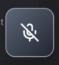

<div
  data-composition-id="turso-rag-sc-h"
  data-start="0"
  data-duration="120"
  data-width="1920"
  data-height="1080"
  style="position: absolute; inset: 0; width: 1920px; height: 1080px"
>
  <div id="scene8" class="scene">
    <div class="scene-content scene8-inner">
      <h2 class="sec8">Conversational voice</h2>
      <h2 class="h8">Open the Vowel control in the nav</h2>
      <div class="hero8">
        <div class="ui3d" aria-hidden="true">
          <div class="ui3d-glow"></div>
          <div class="ui3d-sway" id="sway8-hero">
            
          </div>
        </div>
        
        
      </div>
      <p class="cfg8-intro">API key configuration — SaaS or self-hosted.</p>
      <div class="cfg8-3d">
        <div class="ui3d" aria-hidden="true">
          <div class="ui3d-glow sm"></div>
          <div class="ui3d-sway" id="sway8-cfg">
            
          </div>
        </div>
      </div>
    </div>
  </div>
  <script>
    (function () {
      window.__timelines = window.__timelines || {};
      var tl = gsap.timeline({ paused: true });
      tl.set({}, {}, 120);
      window.__timelines["turso-rag-sc-h"] = tl;
    })();
  </script>
</div>
